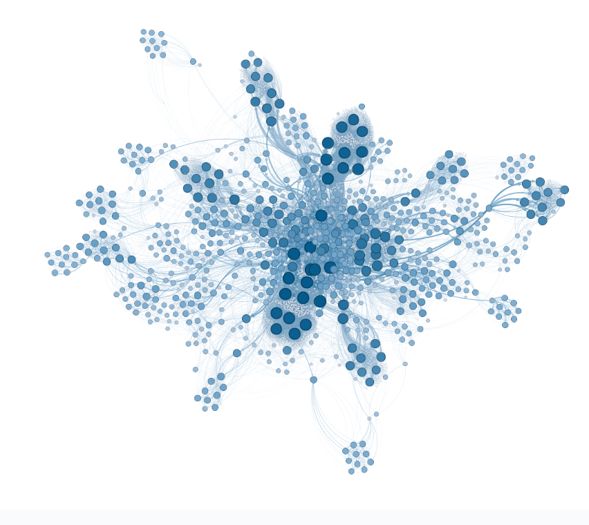

This project aimed to classify five types of clothing from images using the MNIST fashion dataset. We implemented Linear Discriminant Analysis (LDA) as a feature reduction techniques and Naive Bayes classifier from scratch, using the top two eigenvectors. Additionally, k-Nearest Neighbors and Decision Trees were utilized. Grid search optimized hyperparameters for Decision Trees trained with LDA.


This repository contains SQL queries and responses to various questions across nine different databases. The queries showcase how to retrieve valuable information from these datasets.
These queries represent questions I have solved during my exploration of the databases.

This holds all of my Tableau Dashboards

The goal in this project was to develop algorithms for extracting relevant features from skin lesion images, train machine learning models for accurate classification, and assess their performance compared to human dermatologists' diagnoses. Additionally, we explored the significance of consistent image quality for model development.

In this network science project, we aimed to develop an effective movie recommendation system, based on user's liked movies. To achieve this, we have used the movielens-100k_rating dataset, by using 3 different projection methods.
This guided project explores trends in Netflix movie durations over time using a dataset sourced from DataCamp. Through data cleaning, filtering, and exploratory data analysis in Python, I investigated whether there has been a decline in the duration of movies on the platform. The results indicate a trend towards shorter movies, although the decrease in duration is not substantial.
I analyzed the NYC Airbnb market, focusing on pricing, room types, and reviews. This showcased my proficiency in data analysis and Python programming.
The research questions are :
- Pricing trends
- Room availability by type
- Pricing differences across boroughs.